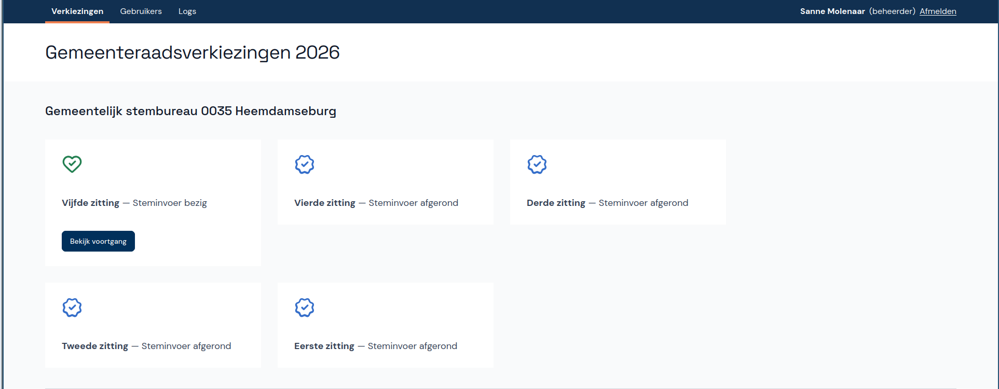

How adding a flex-wrap almost spiraled out of control
How does a project get to be a year late?
…One day at a time.
- The Mythical Man-Month (anniversary edition), Frederick P. Brooks Jr., p. 153
Last week I found a minor bug in the application my team is building. For every election committee, we have a page showing all sessions of that committee. These sessions are shown as a row of cards. Playing around with the number of sessions, I discovered that the row keeps on growing, resulting in a horizontal scroll bar:

Having found this bug, I checked with our UX specialist and they confirmed: the cards should overflow into a second row instead.
Fixing the bug
This left me with the question: do I fix this bug or not?
In favor of not fixing the bug is that it’s extremely rare to have four committee sessions and thus cards, let alone five. Once you’re on your fifth session, having to use a scroll bar to the card of the first session, is probably the least of your concerns. So this bug fits perfectly into the “fine if we never fix it, so forget about it”-category of our zero bug policy. Also, my team is working towards a deadline and we can’t really afford any distractions.
In favor of fixing the bug was that presumably the fix would be really simple. I was fairly confident we were already using CSS flexbox on the cards. In that case all I needed to do was add a flex-wrap: wrap to the container’s class.
So I went to the component’s CSS-file, saw that the container had a display: flex and added the flex-wrap. That left me with the job of verifying that this had actually fixed the issue.
The easiest way to do this, was to use our mock service worker to provide data to the front end. Unfortunately the mock response only contained two committee sessions. (I don’t think I considered using the data from when I found the bug. That would only be viable if I hadn’t reset the data in the meantime.) So I added a few sessions and saw the cards overflowing into the next row:

Updating the mock service data
This is where I could have declared the fix done. Submit a pull request with as only change the addition of a single line to the component’s css file. Explain how to temporarily edit the mock data to test the fix and why I didn’t think it made sense to have that change permanently in the mock data.
That’s not what I did.
I increased the number of committee sessions in the mock data to four. And something in those changes caused some component tests1 to fail. (While at it, I also changed the order of the committee sessions in the mock data, to match the order they would be returned in by the back end.)
Fixing the tests
Ideally, fixing the tests would be as simple as making the tests take the two additional committee sessions into account. Alas, it was not that simple.
In the test we care both about which session it is, e.g. “third session”, and its state, e.g. “data entry in progress”. The first one is shown in bold, the second not. And unfortunately React Testing Library’s ByText query can’t deal with this very well. Because of the bold-tag it considers the two pieces of text as two separate nodes. Which makes perfect sense at the DOM-level, but not so much on the eyeball-level.
For the tests and test data as they were, with two committee session each with a different status, this wasn’t much of a problem. The tests asserted on the two parts of each session separately:
expect(within(committee_session_cards).getByText("Tweede zitting")).toBeVisible(); expect(within(committee_session_cards).getByText("— Steminvoer bezig")).toBeVisible(); expect(within(committee_session_cards).getByText("Eerste zitting")).toBeVisible(); expect(within(committee_session_cards).getByText("— Steminvoer afgerond")).toBeVisible();
With four committee sessions, some of them having the same status, this solution would no longer work.
Luckily I found an answer on Stack Overflow explaining how you can solve this by providing a function to your ByText query instead of providing a string or regular expression. So I started adapting the example and tried to figure out to what degree I could re-use a helper function we had for a custom vitest matcher. I made some progress, but then it was time for our daily standup.
Daily standup to the rescue
In the standup I said I was working on fixing this bug, so we can forget about it. I explained the issue I had run into with the query and that I was afraid it might turn out to be quite a rabbit hole. That is, a distraction we can’t really afford at this time. And then I continued with “Maybe I should just add an id to the cards.” Which really only formed itself as an option in my mind as I was saying those words.
Fixing the tests (continued)
After the standup I played around a little longer with providing a function to the ByText query. I think I got it to work, but it was nowhere near ready to be included in the pull request. I wasn’t entirely sure it worked. When the query couldn’t find the element, the error message was horrible, printing the whole function. And the function was inside the test, instead of in a more sensible location.
Realizing I shouldn’t invest a lot more time in this bug fix, I changed approach and added an id to the Card component, which was as trivial as id={`session-${committeeSession.number}`}.
Which allowed me to update the tests like this:
expect(within(committee_session_cards).getByTestId("session-1")).toHaveTextContent( /Eerste zitting — Steminvoer afgerond/, );
All this work resulted in this pull request almost two hours after my first commit adding the flex-wrap to get the cards to overflow into a new row.
Reflecting on the decisions I made
Along the way I made four decisions:
- looking into fixing the bug
- fixing the bug
- updating the mock service data
- switching to ids for the query
And there’s one decision I did not make: abandoning the update of the mock service data.
I’m happy with the first two decisions. It made sense to check how easy it was to fix the bug and once I had determined it was trivial, to implement the fix.
The third decision was fine as such, except that it made some of the tests fail. At this point, I could have made the decision to abandon updating the mock data. Revert the change and be done with it. Because how important is it that the mock data contains a quite unrealistic number of committee sessions? At this point, however, I wasn’t making any conscious decisions, so I moved on to fixing the tests.
The fourth decision to switch to ids for the query was a good one, although a little late. Arguably, it’s also the better solution. The id will return the card, making it easy to query for anything in the card. The other solution will only return the title of the card, making it hard to query anything else in the card based on the title. While in general I prefer to query on things a user would see, this case seems a good example of where querying by id is the better approach.
Now what did these decisions get me?
A fixed bug. Mock data that’s sorted the same way as the real API response. I worked with a (to me) new part of the codebase. I learned a few things about Testing Library’s queries. The session cards are now easier to query in tests and the related tests are more robust. And it meant I was asking my team mates to review a significantly larger pull request with 72 lined added and 28 deleted, instead of one single line added.
Which raises the question: Apart from the bug fix which would have happened anyway, were those other benefits worth the extra time?
I’m not sure, to be honest. What do you think?
-
Testing types are a hot mess. The failing tests in question cover the React component showing (among other things) the session cards. They use React Testing Library and Mock Service Worker. ↩